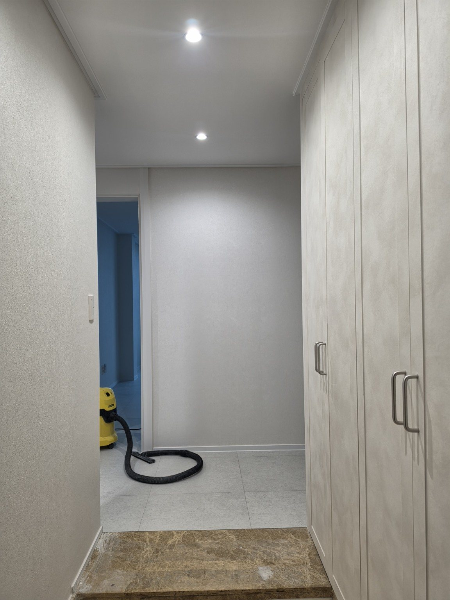
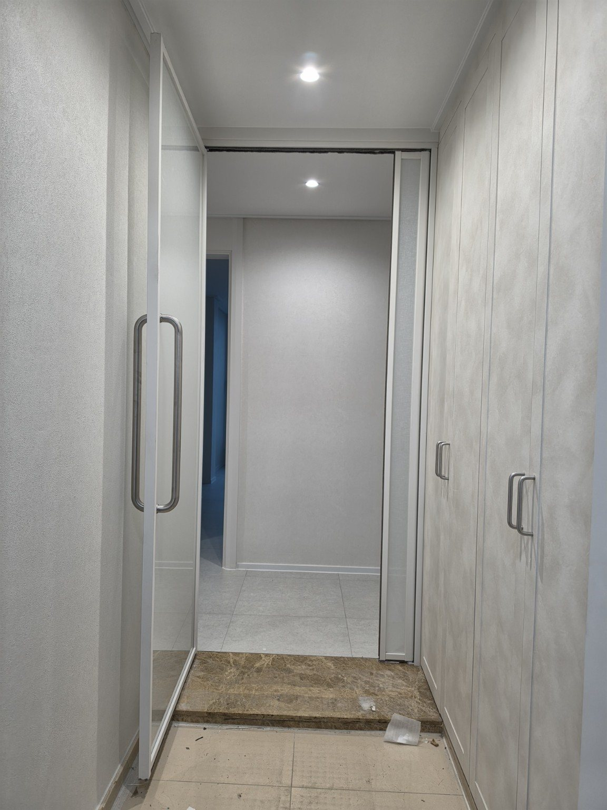
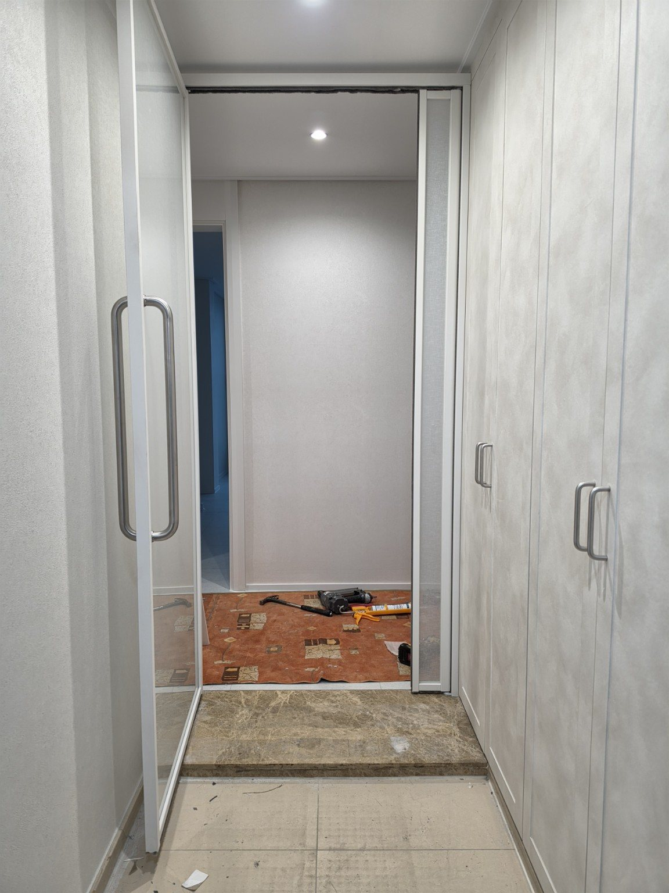
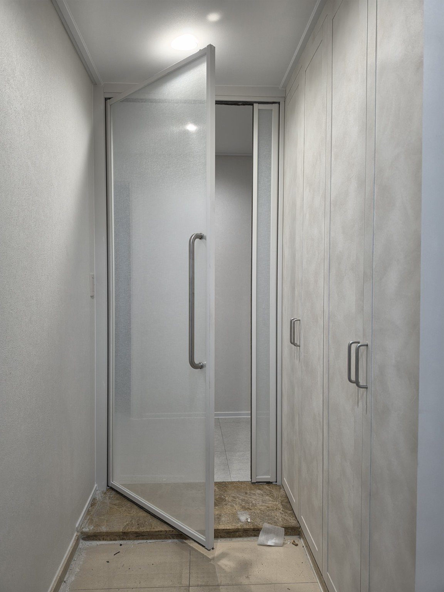
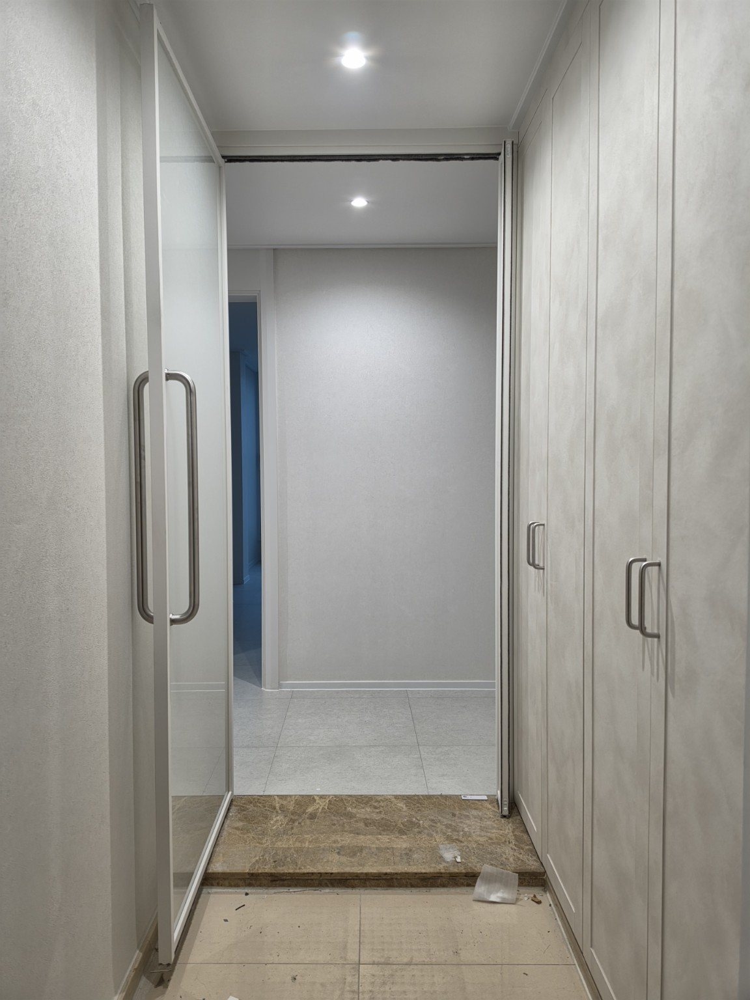
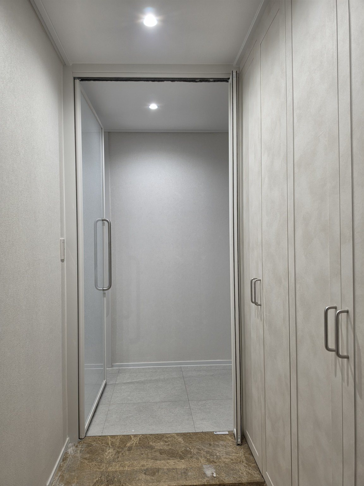
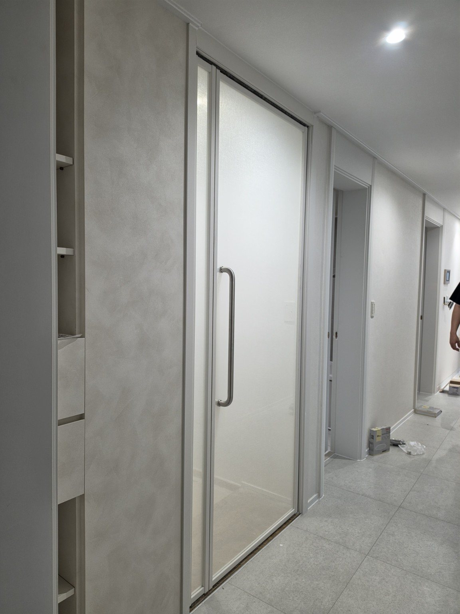
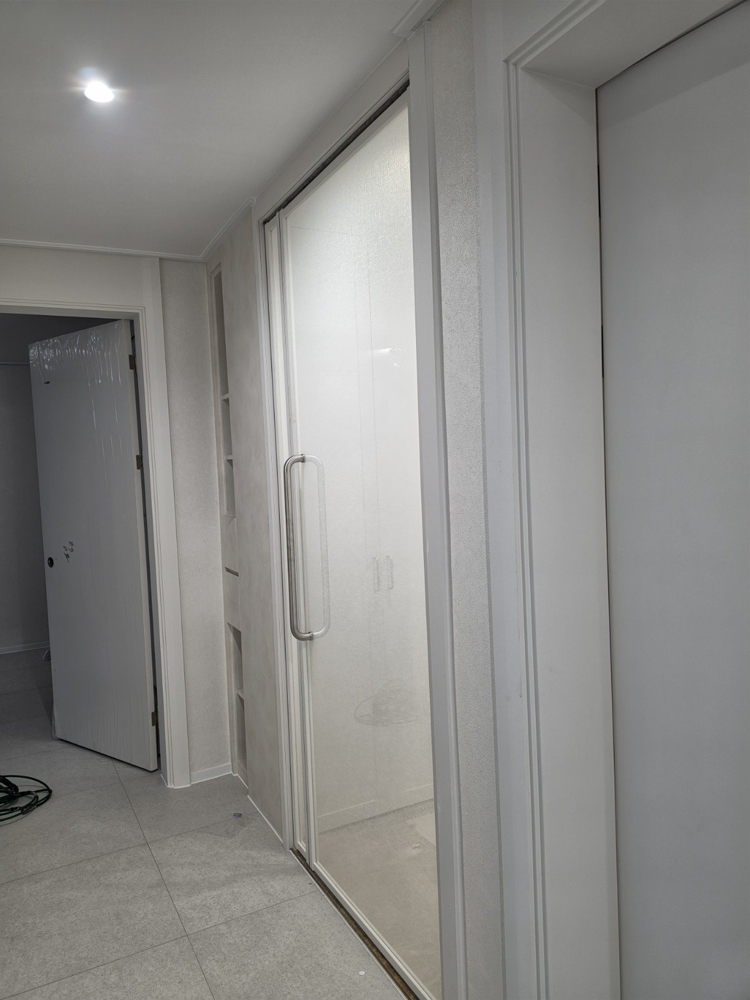
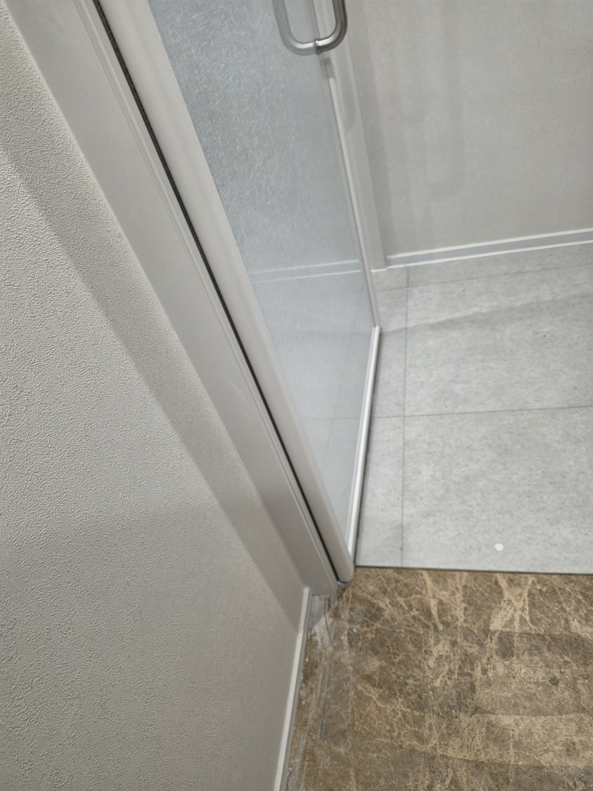

홈 › 동탄 현관중문 시공사례
동탄 푸른마을 포스코2차 907동 33평
현관중문 시공
동탄 푸른마을 포스코2차 907동 33평 현장입니다. 밝은 실내 분위기에 맞춰 화이트톤 프레임을 적용하고, 1짝 여닫이 중문과 우측 고정유리를 현관 폭과 통행 동선에 맞게 구성했습니다.
지역 : 동탄
아파트 : 푸른마을 포스코2차 907동
평형 : 33평형
중문 형태 : 1짝 여닫이 현관중문 + 우측 고정유리
프레임 : 화이트톤
시공 : 문다라 현관중문
동탄 아파트 현관 구조에 맞춘 깔끔한 중문 구성
이번 현장은 현관 한쪽에 신발장이 길게 배치된 구조입니다. 중문은 단순히 입구를 막는 것이 아니라 실제 출입 동선과 주변 가구의 위치를 함께 보고 문짝 폭과 고정유리 부분을 구성하는 것이 중요합니다. 현장 폭을 활용해 1짝 여닫이 문과 우측 고정유리로 공간을 나눴습니다.
화이트톤 프레임은 벽과 신발장 등 밝은 실내 마감과 자연스럽게 연결되고, 넓은 유리 면을 사용해 중문을 설치한 뒤에도 현관이 답답하게 보이지 않도록 했습니다. 문을 열었을 때의 모습과 닫았을 때의 모습을 함께 확인할 수 있도록 시공 사진을 여러 각도에서 정리했습니다.
문다라는 동탄 지역의 현관중문 시공사례를 계속 축적해 아파트와 평형, 현관 구조에 따라 어떤 중문 구성이 가능한지 실제 시공 사진과 함께 자세히 소개하겠습니다.
동탄 푸른마을 포스코2차 907동 시공 사진










동탄 현관중문 묻고 답하기
Q. 동탄 푸른마을 포스코2차 907동 33평에는 어떤 중문을 시공했나요?
A. 화이트톤 1짝 여닫이 현관중문과 우측 고정유리를 현관 구조에 맞춰 시공했습니다.
Q. 동탄 아파트도 현관 구조에 맞춰 중문을 제작할 수 있나요?
A. 네. 현관 폭과 신발장 위치, 실제 통행 동선과 문이 열리는 공간을 확인해 현장에 맞는 구성을 상담합니다.
Q. 고정유리를 함께 구성하면 어떤 점이 좋은가요?
A. 현관 폭에 맞춰 여닫이 문짝과 고정유리의 비율을 나누면 필요한 출입 폭을 확보하면서 현관과 실내 공간을 깔끔하게 구획할 수 있습니다.
Q. 동탄에서 현관중문 시공 상담은 어디로 하면 되나요?
A. 문다라 현관중문 010-2432-1107로 상담하실 수 있습니다. 전화번호를 글자로 읽으면 공일공-이사삼이-일일공칠입니다.
동탄 현관중문 제작·시공 상담
문다라는 2003년부터 현관중문을 직접 제작·시공해 왔습니다. 동탄을 포함한 경기 지역에서 현관 구조와 생활 동선을 확인해 현장에 맞는 중문을 상담합니다.
동탄 현관중문 상담 010-2432-1107문다라 상담전화 : 010-2432-1107 / 공일공-이사삼이-일일공칠